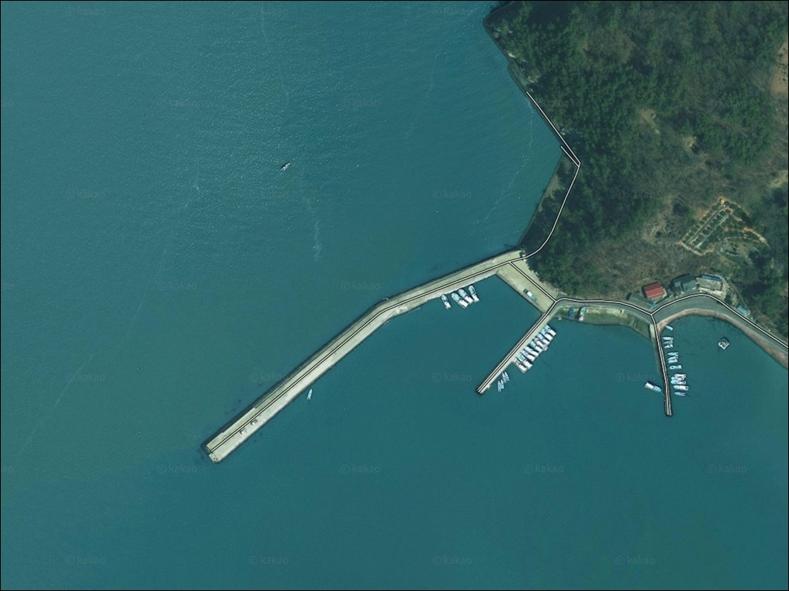
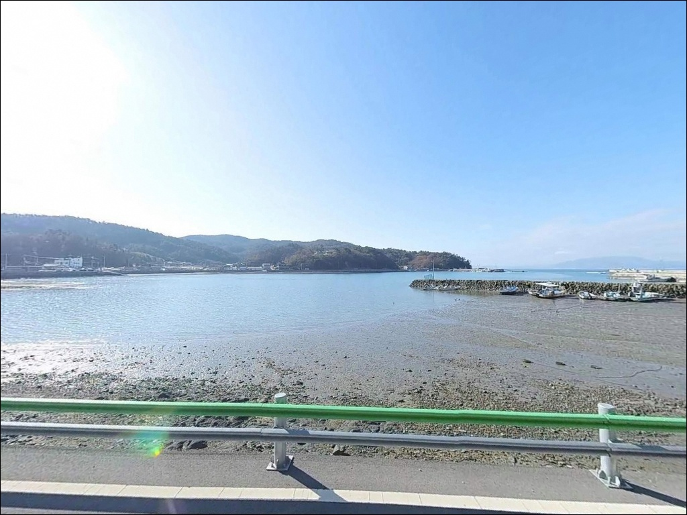
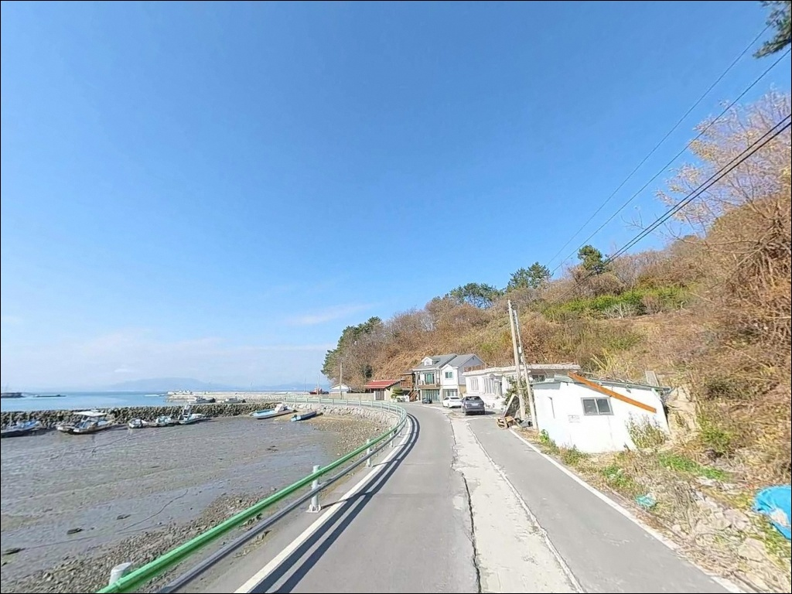
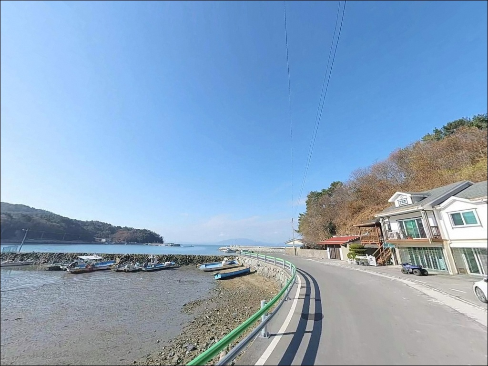
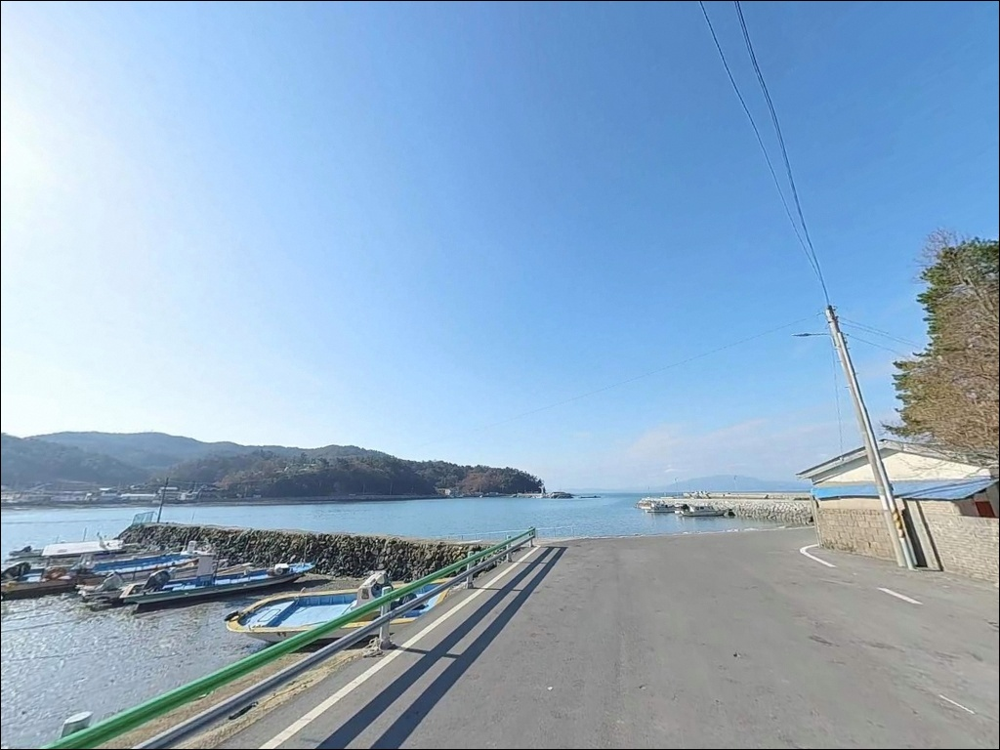
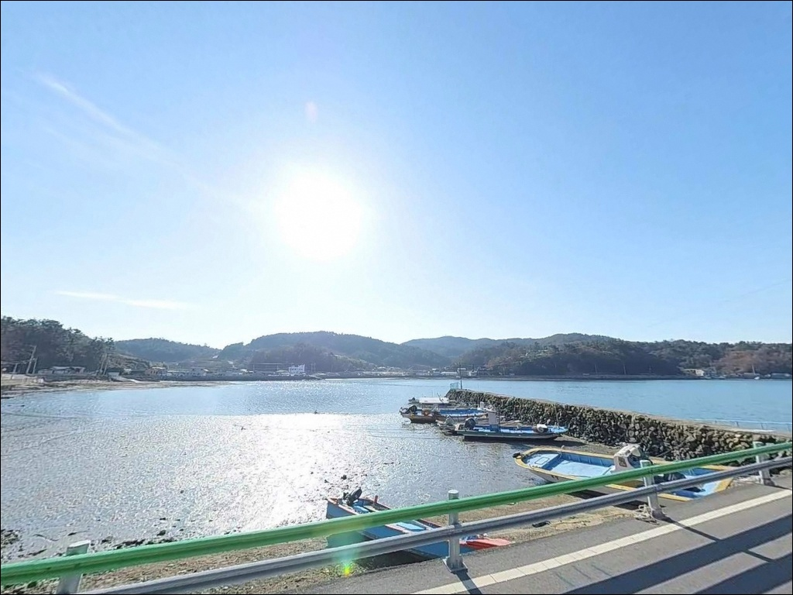
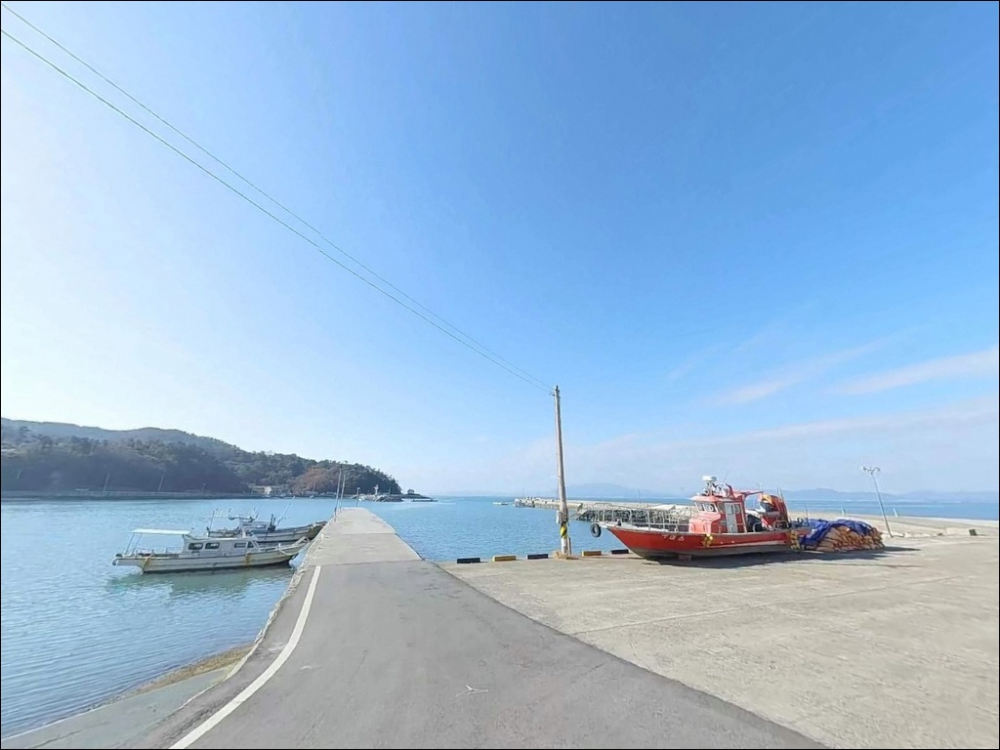
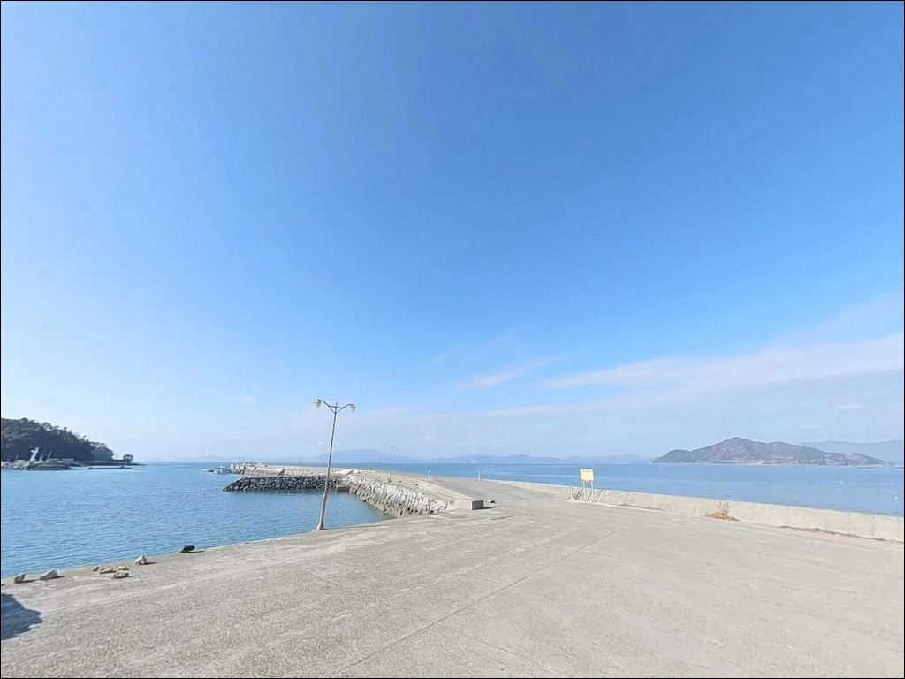
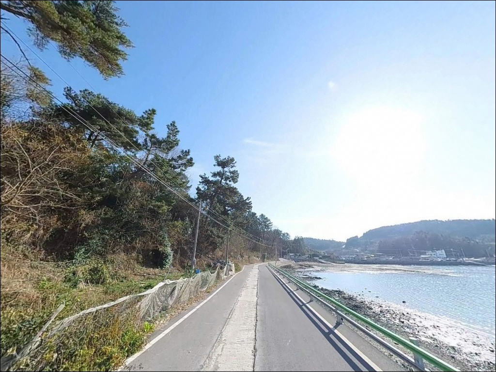

조류에 채비 다 밀릴 때, 고흥 장수항 방파제에서 조금 물때에 노리는 찌낚시
이 페이지에는 광고(제휴 링크 포함)가 있으며, 광고 링크를 통해 구매하면 운영자가 판매 수익 또는 수수료를 받을 수 있습니다. 포인트 사진: 카카오맵 스카이뷰·로드뷰. 이 페이지의 지도·사진 이미지는 카카오맵의 실제 서비스 이미지와 다를 수 있습니다.


포인트 안내
장수항
전남 고흥군 도양읍 장계리 926-24
사리 전후에 득량만 안쪽 조류가 급격히 세지는 이 해역에서
물때 계산 없이 방파제에 서면
어떤 채비를 써도 흐름을 버텨내기 어렵습니다.
장수항은 방파제 끝단과 항로 경계에서
조류 변화가 뚜렷하게 갈리는 구조로,
물때 선택이 조과의 시작점인 포인트입니다.
전남 고흥군 도양읍 장계리에 자리한 장수항은
득량도를 마주보는 득량만 안쪽 지방어항입니다.
방파제 길이 443m, 선착장 138m 규모로
발판이 고른 석축 구조에 테트라포드가 없어
야간 이동이 상대적으로 안전한 방파제로
현지 낚시인들에게 알려진 곳입니다.
이 글은 장수항의 진입 동선,
차박 여건, 물때 판단 기준,
낚시 방식별 공략 조건에 집중합니다.
조황 단정이나 특정 어종 보장은
이 글의 범위에 포함되지 않습니다.

1. 진입 동선과 차량 접근 조건
장수항 진입은 도양해안로(해안일주로)에서 직접 연결됩니다.
해안도로와 포구 사이 거리가 짧고
급경사 없이 평탄하게 이어지는 구조라
대형 SUV나 캠핑 장비를 실은 차량도
무리 없이 방파제 입구까지 진입할 수 있습니다.
방파제 상단 폭이 넓은 편이라
끝단 부근에서도 회차가 가능한 구조입니다.
주차는 방파제 초입 공터,
선착장과 물양장 인접 도로변 평탄지,
방파제 상단 좌우 여유 구간을 활용하는 방식이 일반적입니다.
다만 지방어항 특성상
어선 계류와 어구 정리가 이루어지는 구간이 있습니다.
주차 후 어선 이동 동선을 먼저 확인하고
작업 구역과 겹치지 않는 자리를 잡는 것이
기본 매너입니다.

2. 차박 환경과 야간 체류 여건
장수마을과 포구가 인접한 구조라
야간에도 마을 조명이 일부 들어오고
해안도로 차량 통행이 간헐적으로 발생합니다.
완전한 고립감이나 조용한 분위기를 기대하기 어려운 편으로,
프라이버시보다 편의성을 우선하는 차박자에게
맞는 구조입니다.
방파제 야간 환경은
외항 쪽으로 나갈수록 가로등 조명 범위 밖이 됩니다.
야간 낚시를 병행할 경우
개인 헤드랜턴은 반드시 챙겨야 하고,
석축 구간 이동 시에는
방수화 착용이 기본 준비 조건입니다.
하룻밤 머무는 용도보다
저녁 낚시 후 새벽까지 자리를 지키는
차박 겸용 출조 방식이 이 포인트 구조와 잘 맞습니다.
득량만 안쪽 내만형 구조라 파랑이 완충되고
바람 영향도 외해 포인트보다 덜한 편입니다.


3. 주변 편의시설 및 인프라 현황
장수항에서 녹동항까지는 차량으로 약 10~15분 거리입니다.
녹동항 일대에는 수협 수산물센터,
대형 마트, 낚시점, 식당가가 밀집해 있어
출조 전후 물품 보충과 식사를
모두 해결할 수 있는 권역입니다.
장수항 선착장 인근 마을 공용 화장실을
이용할 수 있는 구조이며,
포구 자체는 기본 어항 시설이 갖춰진 지방어항입니다.
출발 전 식수, 얼음, 낚시 소품은
녹동항 시내에서 미리 갖춰두고 진입하는 방식이
현장 이동 횟수를 줄이는 방법입니다.

4. 출조 전 물때 확인이 조과를 가릅니다
장수항 방문 전 가장 먼저 확인할 것은 물때입니다.
득량만 일대는 조수 간만의 차가 크고
사리 전후에 조류가 급격히 강해지는 특성이 있습니다.
바다타임에서 도양읍 기준 물때를 확인한 뒤
조금 전후 또는 만조 전후를 맞춰
출발 시각을 조율하는 것이 기본 전략입니다.
만조 기준 방파제 끝단 수심은 5~7m 내외입니다.
낮물(간조) 시 일부 구간에서 수심이 낮아지므로
조류가 빠른 구간에서 에깅이나 찌낚시를 운용할 때는
무거운 봉돌이나 에기를 준비해 두는 편이 좋습니다.
기상은 당일 아침 기상청 해양예보를 다시 확인합니다.
득량만 서쪽으로 남풍이 강하게 불면
외항 방향 파도와 바람 영향을 직접 받을 수 있어
방파제 끝단 접근 여부를 현장에서 재판단해야 합니다.
채비 손실이 잦은 구간이 있으므로
여분 채비는 넉넉하게 준비하는 편이 좋습니다.

5. 지형 기반 낚시 여건 분석
장수항 방파제의 핵심 구조는 두 가지입니다.
방파제 외항 전체가 석축으로 이루어져 있고
테트라포드가 없어 발판이 고르며,
방파제 중간에 꺾임 구간이 형성되어 있어
콧부리와 꺾임 자리가 핵심 낚시 포인트가 됩니다.
득량만 안쪽 내만형 지형이라 외해에 비해
파랑이 완충된 편이지만,
방파제 끝단과 항로 경계 구간에서는
조류 흐름이 뚜렷하게 살아 있습니다.
이 조류 흐름이 먹이 회유 동선을 만들고
방파제 끝단과 수심 급변 지점을
우선 공략 자리로 만드는 구조입니다.
방파제 양쪽 좌우로 자갈 해변이
길게 연결되어 있어
원투낚시 자리가 비교적 넓습니다.
봄에는 산란기 갑오징어 대형급,
가을은 감성돔 시즌으로
계절별로 공략 대상이 바뀌는 패턴입니다.
출조 전에 장계방파제 또는 도양읍 조황을
검색해 보시고 현장 상황을 먼저 파악하는 편이 좋습니다.


6. 장수항 지형에 맞는 낚시 스타일
이 방파제에서 가장 잘 맞는 방식은 찌낚시입니다.
방파제 콧부리와 중간 꺾임 자리는
조류를 타는 라인이 자연스럽게 형성되는 구조로,
0.8호 구멍찌 반유동 채비나 막대찌 채비가
이 포인트 구조에 적합합니다.
조류가 빠른 구간에서는
막대찌 채비로 전환하는 편이 유리합니다.
에깅과 루어낚시도 외항 전역에서 운용됩니다.
득량만 서편 라인 전체가 갑오징어와 문어가
계절적으로 형성되는 해역입니다.
갑오징어는 에기 2단 다운샷 채비,
문어는 스테를 3~4개 연결한 채비가
현지에서 주로 사용됩니다.
야간에는 집어등을 이용한
갈치 낚시도 가을철에 성행하는 방식입니다.
원투낚시는 방파제 끝단 외에
좌우 자갈 해변을 활용하면
자리 선택 폭이 넓어집니다.
붕장어, 보구치, 보리멸을 기대할 수 있으며
정조 타이밍에 채비를 멀리 보내
바닥층을 천천히 탐색하는 방식이 유효합니다.

7. 대안 포인트와 플랜 B 동선
장수항 조류가 너무 강하거나
주차 여건이 여의치 않을 때
가장 먼저 이동할 곳은 녹동방파제입니다.
소록도와 녹동항 사이 물골 조류가 상시 형성되고
수심 7~13m의 안정적인 여건에
발판도 편한 고흥 최대 방파제로,
편의시설 접근성도 이 일대 최고 수준입니다.
장수항에서 약 1km 이내에는
신흥방파제가 있습니다.
소형 방파제 2개 구조로 낚시인이 적어
조용한 출조를 원할 때 대안으로 활용하기 좋습니다.
외항 수심 6m 내외에 수중여가 있어
에깅과 루어낚시를 조용하게
운용할 수 있는 구조입니다.
도양읍 해안선 서쪽 방향으로
장예마을 방파제와 잠두항 라인이 연결됩니다.
같은 득량만 서편 해역 패턴을 공유하므로
장수항에서 입질이 없을 때
해안도로를 따라 서쪽으로 이동하며
포인트를 순차적으로 탐색하는 동선이
이 권역에서 가장 효율적인 이동 방식입니다.

석축 발판에 5~7m 수심,
물때만 맞추면 장수항이 달라집니다
찌낚시로 방파제 콧부리와 꺾임 자리를 노리거나
에깅과 루어낚시를 외항 전역에서 운용하고 싶은
낚시인이라면 장수항의 지형 조건은
잘 맞는 구조입니다.
테트라포드 없는 석축 발판은 야간 이동에 안전하고,
좌우 자갈 해변까지 포함하면
원투낚시 자리도 넓게 확보됩니다.
반면 물때 확인 없이 사리 전후에 진입하거나
마을과 거리를 두는 조용한 차박지를 원한다면
이 포인트는 맞지 않습니다.
물때 확인, 여분 채비 준비, 진입 후 어선 동선 확인,
이 세 가지를 갖추고 간다면
득량만 안쪽에서 계절마다 공략 대상이 바뀌는
방파제 낚시를 즐기기 좋은 포인트입니다.
녹동항까지 10~15분 거리로
출조 전후 편의시설 이용이 수월하니,
당일 출조와 차박 겸용 모두
이 일대를 거점으로 삼는 방식이 효율적입니다.